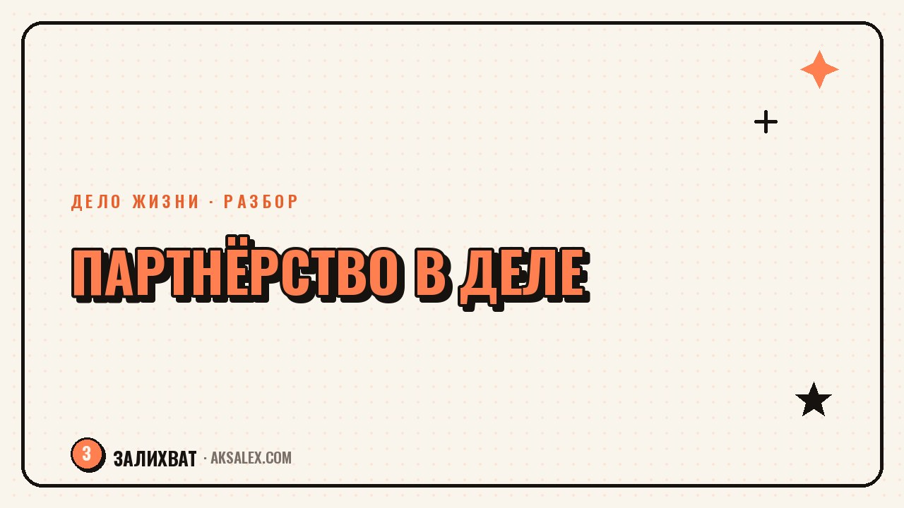

Партнёрство в своём деле: как делить роли и не поссориться

Когда своё дело растёт, в какой-то момент возникает идея позвать кого-то в партнёры: друга, супруга, коллегу, с которым давно хотелось что-то делать вместе. Звучит заманчиво - делить нагрузку, советоваться, не тащить всё одному. Но партнёрство без ясных договорённостей часто портит не только дело, а и отношения, которые были дороги задолго до бизнеса. Разберём, как войти в партнёрство так, чтобы через год не жалеть и о деле, и о человеке.
Почему партнёрство рушится чаще, чем кажется в начале
В начале партнёрства обычно царит эйфория: кажется, что раз вы с человеком дружите или хорошо ладите, роли и деньги распределятся как-то сами собой, по мере дела. Это частая ловушка. Хорошие личные отношения не гарантируют совпадения взглядов на то, кто принимает решения, сколько часов каждый вкладывает и как делится прибыль, если один работает по вечерам, а другой - полный день.
Конфликт редко начинается с денег напрямую. Чаще он растёт из невысказанных ожиданий: один думал, что партнёр будет вовлечён так же сильно, как он сам, а партнёр видел своё участие как помощь между делом. Когда ожидания не совпадают, а разговора об этом не было, обида накапливается тихо и выливается уже не на тему 'кто сколько работает', а на личные упрёки.
Три признака, что партнёрство движется к кризису
- Вы оба молчите о том, что раздражает в распределении нагрузки, надеясь, что само пройдёт
- Решения по делу принимаются без согласования - один действует, другой узнаёт постфактум
- Разговор о деньгах каждый раз откладывается 'на потом, сейчас не время'
Что обсудить до старта, а не после первых денег
Лучший момент для сложного разговора - до того, как дело начало приносить деньги, а не после: на старте проще договориться честно, потому что ставки ниже и эмоции спокойнее. Разговор стоит вести конкретно: кто за что отвечает, кто принимает финальное решение в спорной ситуации, как делится прибыль и убытки, что происходит, если один хочет выйти из дела.
Пошаговый план разговора с партнёром
- Распишите по отдельности, кто что будет делать - и сравните списки, не совпадения всегда находятся
- Договоритесь о деньгах: доля в прибыли, компенсация за неравный вклад, кто вкладывает стартовый капитал
- Определите, кто принимает решение, если мнения расходятся - голос большинства не работает при двух партнёрах
- Проговорите сценарий выхода одного из партнёров - это не пессимизм, а подушка безопасности для отношений
- Зафиксируйте договорённости письменно, даже если партнёр - близкий человек
Письменная договорённость не про недоверие к человеку. Она про то, что память у всех избирательная, а эмоции в споре искажают даже то, о чём договаривались устно и искренне.
Какие форматы партнёрства бывают и что выбрать
Партнёрство не обязано быть симметричным 50 на 50 - часто более устойчивая конструкция там, где роли и доли чётко различаются, потому что тогда понятно, кто за что отвечает в моменте спора. Вот основные форматы, которые встречаются в небольших делах.
| Формат | Когда подходит | Главный риск |
|---|---|---|
| Равное партнёрство 50/50 | Равный вклад времени, денег и экспертизы | Тупик при разногласии, нет решающего голоса |
| Основной + младший партнёр | Один вкладывает больше времени или денег | Младший партнёр может чувствовать себя недооценённым |
| Партнёр-инвестор без операционки | Нужны деньги, а не ежедневная помощь | Ожидания по контролю и отчётности нужно оговорить сразу |
| Совместное дело без формального партнёрства | Пробный период, проверка совместимости | Нет защиты, если один решит забрать дело себе |
Как не потерять отношения, если дело всё-таки пойдёт не так
Даже с хорошей договорённостью дело может не получиться - рынок, обстоятельства, выгорание одного из партнёров. Важно заранее разделить в голове два разных вопроса: 'не получилось дело' и 'испортились отношения' - это не обязано идти вместе. Если партнёр - близкий человек, стоит прямо проговорить: что бы ни случилось с бизнесом, вы хотите сохранить отношения и готовы ради этого честно разойтись, а не тянуть дело из гордости.
Если конфликт уже назрел, не стоит откладывать разговор в надежде, что сам уляжется - обида без обсуждения копится. Отдельная встреча именно про отношения, не про операционные задачи, часто снимает напряжение быстрее, чем попытка решить всё на ходу между делами.
Нужен ли тебе партнёр вообще
Перед тем как звать кого-то в партнёры, честно спроси себя: ты хочешь партнёра, потому что боишься нести ответственность один, или потому что этому человеку есть что добавить именно в дело. Это разные мотивы, и первый часто ведёт к партнёрству, которое держится на страхе, а не на взаимной пользе. Если нагрузку страшно тащить одному - возможно, дело не в недостатке партнёра, а в недостатке поддержки или делегирования.
Хорошее партнёрство строится не на дружбе, а на дополняющих навыках и честном разговоре о деньгах и ролях до того, как появились первые деньги и первые обиды. Если этот разговор уже был и прошёл честно - дальше легче.
Частые вопросы
Стоит ли брать в партнёры друга или родственника?
Это не плохая идея сама по себе, но риск выше из-за смешения личных и деловых ожиданий. Если решились - договоритесь обо всём конкретно и письменно, именно потому что личные отношения мешают потом честно обсуждать деньги и роли.
Как делить прибыль, если один партнёр вкладывает деньги, а другой - время?
Универсального правила нет, но нужно оценить оба вклада заранее и зафиксировать долю или компенсацию до старта. Споры чаще всего возникают из-за того, что эта оценка не проговорена вовремя.
Что делать, если партнёр перестал вкладываться так же, как в начале?
Сначала открытый разговор о том, что изменилось - выгорание, личные обстоятельства, потеря интереса. Если вовлечённость объективно упала, стоит пересмотреть доли или роли, а не молчать и копить обиду.
Как понять, что партнёрство пора заканчивать?
Если разговоры о деле регулярно переходят в личные упрёки, а решения принимаются без согласования - это сигнал. Лучше завершить партнёрство по заранее оговорённому сценарию, чем тянуть дело, разрушая отношения.
Нужен ли письменный договор между партнёрами, если дело небольшое?
Да, даже для небольшого дела. Письменная договорённость фиксирует роли, доли и сценарий выхода - она защищает от того, что память и трактовки у двух людей со временем расходятся.
Раз тема оказалась полезной, вот что почитать следующим. Нейросети для логиста: маршруты, склад и документы без лишней рутины и ошибок в накладных.
Читать статью →а не вручную